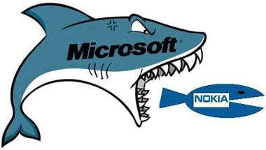

Qt是什么？Qt简介（非常全面）
Qt（官方发音 [kju:t]，音同 cute）是一个跨平台的 C++ 开发库，主要用来开发图形用户界面（Graphical User Interface，GUI）程序，当然也可以开发不带界面的命令行（Command User Interface，CUI）程序。
Qt 是纯 C++ 开发的，所以学好 C++ 非常有必要，对于不了解 C++ 的读者，我建议先阅读《C语言教程》，再阅读《C++教程》。C++ 是在C语言的基础上发展起来的，学完C语言就学了 C++ 的一半了。
Qt 还存在 Python、Ruby、Perl 等脚本语言的绑定， 也就是说可以使用脚本语言开发基于 Qt 的程序。开源社区就是这样，好东西就会被派生扩展，到处使用， 越来越壮大。
Qt 支持的操作系统有很多，例如通用操作系统 Windows、Linux、Unix，智能手机系统 Android、iOS、WinPhone， 嵌入式系统 QNX、VxWorks 等等。

Qt 图标（Logo）
Qt 是应用程序开发的一站式解决方案，有了 Qt，你就可以高枕无忧了！Qt 本身包含的模块也日益丰富， 一直有新模块和第三方模块加入进来。
大部分应用程序都可以使用 Qt 实现，除了与计算机底层结合特别紧密的，例如驱动开发，它直接使用硬件提供的编程接口，而不能使用操作系统自带的函数库。
1997年，Qt 被用来开发 Linux 桌面环境 KDE，大获成功，使 Qt 成为 Linux 环境下开发 C++ GUI 程序的事实标准。
下面的程序都使用 Qt 开发：WPS、YY语音、Skype、豆瓣电台、虾米音乐、淘宝助理、千牛、暴雪的战网客户端、VirtualBox、Opera、咪咕音乐、Google地图、Adobe Photoshop Album 等。
Linux 也是嵌入式的主力军，广泛应用于消费类电子、工业控制、军工电子、电信/网络/通讯、航空航天、汽车电子、医疗设备、仪器仪表等相关行业。
Qt 虽然也支持手机操作系统，但是由于 Android 本身已经有 Java 和 Kotlin，iOS 本身已经有 Objective-C 和 Swift，所以 Qt 在移动端的市场份额几乎可以忽略。
总起来说，Qt 主要用于桌面程序开发和嵌入式开发。
诺基亚手机部门出售给微软之后，大部分诺基亚手机系统开发人员都被遣散了。
目前基于 Tizen 的首款手机三星 Z1 在印度上市了。在 Tizen 阵营，国内有中兴、百度涉及了。Qt 开源项目里也有 Qt for Tizen 版本，有兴趣的可以去搜搜。
Qt 公司有专门针对移动开发的商业版本，20 欧元或 25 美元一个月。不做商业可以无视这个，用开源版本也是可以开发如 Android、iOS、WinPhone 应用的。
本教程关注的是传统桌面操作系统开发的，移动开发可以参考 Qt 官方的文档。
Qt 最早是 1991 年由挪威的 Eirik Chambe-Eng 和 Haavard Nord 开发的， 他们随后于 1994 年 3 月 4 号正式成立奇趣科技公司（Trolltech）。Qt 原本是商业授权的跨平台开发库， 在 2000 年奇趣科技公司为开源社区发布了遵循 GPL（GNU General Public License）许可证的开源版本。
在 2008 年，诺基亚公司收购了奇趣科技公司，并增加了 LGPL（GNU Lesser General Public License）的授权模式。诺基亚联合英特尔利用 Qt 开发了全新的智能手机系统 MeeGo，可惜遭遇了微软木马屠城，诺基亚被迫放弃了 MeeGo， 而 Qt 商业授权业务也于 2011 年 3 月出售给了芬兰 IT 服务公司 Digia。
当然好消息是 Digia 于 2014 年 9 月宣布成立 Qt Company 全资子公司，独立运营 Qt 商业授权业务。目前 Qt 公司大力推广移动平台开发和商业应用， 总的来说 Qt 历经曲折，现在算是步入正轨了。
经过 20 多年的发展，Qt 已经成为最优秀的跨平台开发框架之一，在各行各业的项目开发中得到广泛应用。许多大型软件都是用 Qt 开发的，如 Autodesk Maya、Google Earth、Skype、WPS Office等。
KDE 是 Linux 操作系统的桌面环境，与 GNOME 桌面是类似的，作为开源桌面它们竞争的情况更为多见，有兴趣的读者请猛击《Linux桌面环境》了解更多。
KDE 是采用 GPL 许可证发布的开源软件，而最初 Qt 是商业授权的，存在商业侵权风险，GNOME 则是基于开源 GTK 库的，没有什么商业风险，这一度是 GNOME 优越于 KDE 的特性。
由于 Qt 的商业授权，KDE 社区一度混乱纠结，与此同时 GNOME 则如火如荼发展起来了。 KDE 毕竟算是亲儿子，被另一波人欺负，奇趣科技公司当然看不下去了，最后是奇趣科技公司为了赢得开发者的支持，为 Qt 增加了 GPL 的开源授权， 对于开源社区而言，遵循 GPL 使用 Qt 就不需要付费，这为 KDE 解决了燃眉之急。
之后 KDE 桌面和 GNOME 都发展壮大起来，都做得越来越好了。
对这两种开源授权，简单来说，使用 GPL 版本的软件一定还是 GPL 的开源软件，无论是使用了 Qt 的程序代码还是修改了 Qt 库代码，都必须按照 GPL 来发布，这是 GPL 的传染性。
GPL 是什么都要开源，这对商业软件应用是不利的，所以诺基亚增加了 LGPL 授权 （第一个 L 可以叫 Lesser 宽松版或 Library 开发库版）。使用 LGPL 授权就可以利用 Qt 官方动态链接库，而不必开放商业代码。只要不修改和定制 Qt 库，仅使用 Qt 官方发布的动态链接库就可以不开源，这是商业友好的授权模式。
其实只要不是做商业，就不太需要关注用什么授权，以 GPL 授权发布程序代码就可以了。
世界上的开源协议有很多，有兴趣的读者请猛击《开源协议是什么？有哪些？如何选择？》了解更多内容。
最后请认准 Qt 官方网站（有时候访问速度很慢甚至不能访问，读者请自备梯子），可以查阅文档或者浏览资讯：https://www.qt.io/
Qt 是纯 C++ 开发的，所以学好 C++ 非常有必要，对于不了解 C++ 的读者，我建议先阅读《C语言教程》，再阅读《C++教程》。C++ 是在C语言的基础上发展起来的，学完C语言就学了 C++ 的一半了。
Qt 还存在 Python、Ruby、Perl 等脚本语言的绑定， 也就是说可以使用脚本语言开发基于 Qt 的程序。开源社区就是这样，好东西就会被派生扩展，到处使用， 越来越壮大。
Qt 支持的操作系统有很多，例如通用操作系统 Windows、Linux、Unix，智能手机系统 Android、iOS、WinPhone， 嵌入式系统 QNX、VxWorks 等等。
Qt 图标（Logo）
Qt 可以做什么？
Qt 虽然经常被当做一个 GUI 库，用来开发图形界面应用程序，但这并不是 Qt 的全部；Qt 除了可以绘制漂亮的界面（包括控件、布局、交互），还包含很多其它功能，比如多线程、访问数据库、图像处理、音频视频处理、网络通信、文件操作等，这些 Qt 都已经内置了。Qt 是应用程序开发的一站式解决方案，有了 Qt，你就可以高枕无忧了！Qt 本身包含的模块也日益丰富， 一直有新模块和第三方模块加入进来。
大部分应用程序都可以使用 Qt 实现，除了与计算机底层结合特别紧密的，例如驱动开发，它直接使用硬件提供的编程接口，而不能使用操作系统自带的函数库。
1997年，Qt 被用来开发 Linux 桌面环境 KDE，大获成功，使 Qt 成为 Linux 环境下开发 C++ GUI 程序的事实标准。
下面的程序都使用 Qt 开发：WPS、YY语音、Skype、豆瓣电台、虾米音乐、淘宝助理、千牛、暴雪的战网客户端、VirtualBox、Opera、咪咕音乐、Google地图、Adobe Photoshop Album 等。
Linux 也是嵌入式的主力军，广泛应用于消费类电子、工业控制、军工电子、电信/网络/通讯、航空航天、汽车电子、医疗设备、仪器仪表等相关行业。
Qt 虽然也支持手机操作系统，但是由于 Android 本身已经有 Java 和 Kotlin，iOS 本身已经有 Objective-C 和 Swift，所以 Qt 在移动端的市场份额几乎可以忽略。
总起来说，Qt 主要用于桌面程序开发和嵌入式开发。
Qt 和智能手机
Qt 目前支持主流的 Android、iOS、WinPhone 等智能机操作系统。MeeGo 是基于 Qt 开发的操作系统，由于被诺基亚抛弃了， 只剩一代绝版诺基亚 N9 手机。诺基亚手机部门出售给微软之后，大部分诺基亚手机系统开发人员都被遣散了。
- 原来诺基亚的一部分人成立新的 Jolla（卓蓝）公司，发布了 MeeGo 的衍生版智能手机系统 Sailfish（旗鱼），相应的手机和平板也发布开卖了。
- 另一拨人投靠了 Tizen（泰泽），Tizen 是英特尔和三星力推的智能手机系统，该系统整合了 Limo 和 MeeGo，因为 MeeGo 系统被诺基亚抛弃，英特尔其实是被出卖了，所以只能联合三星重造智能手机系统 Tizen。
目前基于 Tizen 的首款手机三星 Z1 在印度上市了。在 Tizen 阵营，国内有中兴、百度涉及了。Qt 开源项目里也有 Qt for Tizen 版本，有兴趣的可以去搜搜。
Qt 公司有专门针对移动开发的商业版本，20 欧元或 25 美元一个月。不做商业可以无视这个，用开源版本也是可以开发如 Android、iOS、WinPhone 应用的。
本教程关注的是传统桌面操作系统开发的，移动开发可以参考 Qt 官方的文档。
Qt 的辛酸史
说到 Qt 的发展史，那真是一波三折，几经卖身。Qt 最早是 1991 年由挪威的 Eirik Chambe-Eng 和 Haavard Nord 开发的， 他们随后于 1994 年 3 月 4 号正式成立奇趣科技公司（Trolltech）。Qt 原本是商业授权的跨平台开发库， 在 2000 年奇趣科技公司为开源社区发布了遵循 GPL（GNU General Public License）许可证的开源版本。
在 2008 年，诺基亚公司收购了奇趣科技公司，并增加了 LGPL（GNU Lesser General Public License）的授权模式。诺基亚联合英特尔利用 Qt 开发了全新的智能手机系统 MeeGo，可惜遭遇了微软木马屠城，诺基亚被迫放弃了 MeeGo， 而 Qt 商业授权业务也于 2011 年 3 月出售给了芬兰 IT 服务公司 Digia。

当然好消息是 Digia 于 2014 年 9 月宣布成立 Qt Company 全资子公司，独立运营 Qt 商业授权业务。目前 Qt 公司大力推广移动平台开发和商业应用， 总的来说 Qt 历经曲折，现在算是步入正轨了。
经过 20 多年的发展，Qt 已经成为最优秀的跨平台开发框架之一，在各行各业的项目开发中得到广泛应用。许多大型软件都是用 Qt 开发的，如 Autodesk Maya、Google Earth、Skype、WPS Office等。
永远不要忽视微软帝国的威胁，作为软件业的一代霸主，任何人都不要天真地试图和它做朋友，因为霸主不可能有朋友。微软的木马屠城是所有诺基亚人和芬兰人的痛，希望读者们都记牢这条。
Qt 和 KDE
之前提到 Qt 原本是商业授权软件，是怎么开源的呢？这就涉及 Qt 和 KDE 的纠葛了。KDE 是 Linux 操作系统的桌面环境，与 GNOME 桌面是类似的，作为开源桌面它们竞争的情况更为多见，有兴趣的读者请猛击《Linux桌面环境》了解更多。
KDE 是采用 GPL 许可证发布的开源软件，而最初 Qt 是商业授权的，存在商业侵权风险，GNOME 则是基于开源 GTK 库的，没有什么商业风险，这一度是 GNOME 优越于 KDE 的特性。
由于 Qt 的商业授权，KDE 社区一度混乱纠结，与此同时 GNOME 则如火如荼发展起来了。 KDE 毕竟算是亲儿子，被另一波人欺负，奇趣科技公司当然看不下去了，最后是奇趣科技公司为了赢得开发者的支持，为 Qt 增加了 GPL 的开源授权， 对于开源社区而言，遵循 GPL 使用 Qt 就不需要付费，这为 KDE 解决了燃眉之急。
之后 KDE 桌面和 GNOME 都发展壮大起来，都做得越来越好了。
GPL 和 LGPL
除了商业授权，目前 Qt 的开源授权有两种，一种是 GPL 授权，另一种是 LGPL 授权（诺基亚收购后新增）。对这两种开源授权，简单来说，使用 GPL 版本的软件一定还是 GPL 的开源软件，无论是使用了 Qt 的程序代码还是修改了 Qt 库代码，都必须按照 GPL 来发布，这是 GPL 的传染性。
GPL 是什么都要开源，这对商业软件应用是不利的，所以诺基亚增加了 LGPL 授权 （第一个 L 可以叫 Lesser 宽松版或 Library 开发库版）。使用 LGPL 授权就可以利用 Qt 官方动态链接库，而不必开放商业代码。只要不修改和定制 Qt 库，仅使用 Qt 官方发布的动态链接库就可以不开源，这是商业友好的授权模式。
其实只要不是做商业，就不太需要关注用什么授权，以 GPL 授权发布程序代码就可以了。
世界上的开源协议有很多，有兴趣的读者请猛击《开源协议是什么？有哪些？如何选择？》了解更多内容。
最后请认准 Qt 官方网站（有时候访问速度很慢甚至不能访问，读者请自备梯子），可以查阅文档或者浏览资讯：https://www.qt.io/
关注公众号「站长严长生」，在手机上阅读所有教程，随时随地都能学习。内含一款搜索神器，免费下载全网书籍和视频。

微信扫码关注公众号